Wörterbücher
Ein Wörterbuch ist eine nach Kategorien geordnete Sammlung von Wörtern und Wendungen. LemmaLoom findet jede Stelle in Ihren Dokumenten, an der diese Begriffe vorkommen, zählt die Treffer jeder Kategorie und kann sie in der Leseansicht annotieren. Ein Wörterbuch bietet sich immer dann an, wenn sich das Gesuchte an seinem Wortlaut erkennen lässt, etwa Heckenausdrücke oder das Vokabular eines Politikfelds.
Die Beispiele in diesem Kapitel verwenden „Heckenausdrücke“, das Wörterbuch des Projekts „Klimadebatte“. Sie können das Projekt mit dem Menübefehl Ablage ▸ Importieren ▸ Beispielprojekt in LemmaLoom importieren (siehe Das Beispielprojekt in Kapitel 1, Einführung). „Heckenausdrücke“ hat zwei Kategorien mit je neun Begriffen. „Approximatoren“ enthält Wörter wie etwa, ungefähr und rund sowie die Wendung mehr oder weniger. „Abschwächer“ enthält Wendungen wie ich glaube und würde ich sagen sowie einzelne Wörter wie vielleicht und wahrscheinlich. Mit beiden Arten von Ausdrücken schwächen Schreibende Aussagen und Behauptungen in gewissem Maß ab; deshalb gelten sie als Heckenausdrücke. Approximatoren schwächen Zahlenangaben oder beschreibende Wendungen ab, indem sie deren Genauigkeit einschränken, zum Beispiel in etwa zwölf Jahre. Abschwächer dagegen relativieren Aussagen, indem sie verhindern, dass sich die schreibende Person ganz auf eine Behauptung festlegt.
Wichtige Begriffe
Ein Wörterbuch gehört zu genau einem Projekt. Sie können es auf jedes Dokument, jedes Set und jede Abfrage in diesem Projekt anwenden. Ein Wörterbuch besteht aus Kategorien von Begriffen.
Eine Kategorie hat einen Namen, eine Farbe und eine Liste zugehöriger Begriffe. In der Farbe der Kategorie erscheinen ihre Begriffe in der Leseansicht und ihre Balken in jedem Diagramm.
Ein Begriff ist ein Wort oder eine Wendung, etwa vielleicht oder mehr oder weniger. Begriffe können in jeder Sprache stehen. LemmaLoom findet einen Begriff allein anhand des Textes und berücksichtigt dabei nur seinen Wortlaut, nicht seine Bedeutung (siehe Wie Begriffe gefunden werden und Prüfen, worauf ein Begriff passt weiter unten in diesem Kapitel).
Einige Funktionen in diesem Kapitel setzen die Indizierung voraus, die grammatische Verarbeitung, die LemmaLoom nach dem Import mit jedem Dokument vornimmt. Bei der Indizierung erkennt LemmaLoom jedes Wort und jeden Satz eines Dokuments, ordnet jedem Wort seine Grundform zu, das Lemma (zum Beispiel scheint/schien → scheinen), und bestimmt seine Wortklasse (siehe Kapitel 21, Analyse und Indizierung).
Wenn Sie Ihre Wörterbücher ändern, sucht LemmaLoom erneut nach allen Begriffen dieser Wörterbücher. Änderungen zeigen sich deshalb sofort in den Zahlen der Ansicht Wörterbücher und in jeder aktivierten Wörterbuch-Lens; Abfragen, die diese Begriffe verwenden, berücksichtigen sie bei ihrer nächsten Ausführung. Sichern Sie eine Abfrage mit Ihren Wörterbuchbegriffen als Analysator, arbeitet dieser Analysator weiter mit den ursprünglichen Begriffen (siehe Eine Wörterbuchabfrage als Lens oder Analysator sichern weiter unten in diesem Kapitel). Um die aktuellen Treffer als Kodierungen festzuhalten, kodieren Sie sie automatisch (siehe Die Treffer kodieren weiter unten in diesem Kapitel).
Die eingebaute Lens Metadiskurs hebt Heckenausdrücke in Ihrem Text mit eigenen Wortlisten und anhand von Lemma und Wortklasse hervor (siehe Metadiskurs in Kapitel 6, Lenses). Ein Wörterbuch enthält nur die Begriffe, die Sie selbst hinzufügen. Jeden Begriff können Sie sehen, verschieben und entfernen.
| Ort | Was Sie mit einem Wörterbuch tun können |
|---|---|
| Ansicht Wörterbücher eines Projekts oder Sets | Wörterbücher anlegen und bearbeiten; sehen, wie oft jede Kategorie und jeder Begriff vorkommt |
| Lens-Menü der Leseansicht | Die Begriffe im geöffneten Dokument annotieren |
| Zum Wörterbuch hinzufügen in der Auswahlleiste der Leseansicht | Den ausgewählten Text als Begriff hinzufügen |
| Ansicht Wortskizze | Die Begriffe einer Kategorie nacheinander skizzieren |
| Abfragen | Die Treffer finden, in Regeln verwenden und die Begriffe mit ihren Treffern auflisten |
Wörterbücher und Codes
Wörterbuchkategorien ähneln Codes äußerlich in vielem, denn auch sie haben einen Namen und eine Farbe und heben Textstellen in Ihren Dokumenten hervor. In der Praxis entstehen und wirken sie aber auf ganz unterschiedliche Weise, und davon hängt ab, welches der beiden zu einer Fragestellung passt.
Kodierungen halten Interpretationen fest, die bei der qualitativen Analyse von Textstellen entstehen. Wenn Sie eine Textstelle so lesen, dass sie Zweifel ausdrückt, und sie entsprechend markieren, indem Sie den Code „Unsicherheit“ vergeben, ordnen Sie ihr diese Interpretation zu, und sie bleibt bestehen, bis Sie sie entfernen. Ein Wörterbuch findet Textstellen allein anhand der Wortformen, unabhängig von Kontext und Interpretation. LemmaLoom findet jedes Vorkommen der festgelegten Begriffe in allen Dokumenten Ihres Projekts, auch in neu hinzugefügten, ganz gleich, was die Wörter an ihrer Stelle bedeuten.
In der Regel eignet sich ein Wörterbuch besser für Merkmale, die an bestimmten Wortformen erkennbar sind, etwa Heckenausdrücke oder die Namen politischer Maßnahmen, besonders wenn Sie sie über viele Dokumente hinweg zählen. Ein Wörterbuch zeigt außerdem schnell, wo etwas vorkommt, noch bevor Sie die Texte genau lesen. Codes eignen sich für alles, was vom Kontext abhängt, etwa eine Textstelle, die ohne verräterisches Wort Zweifel ausdrückt, oder ein Argument, das sich über mehrere Sätze erstreckt.
Viele Studien verbinden Wörterbücher und Kodierung. So können Sie zum Beispiel Textstellen anhand ihrer Treffer für Wörterbuchbegriffe automatisch kodieren, dann jeden Treffer einzeln prüfen und die Fehltreffer verwerfen (siehe Die Treffer kodieren weiter unten in diesem Kapitel). Eine Abfrage kann außerdem Wörterbuch- und Coderegeln verbinden und etwa die mit „Unsicherheit“ kodierten Textstellen finden, die einen Abschwächer enthalten (siehe Wörterbuchregeln weiter unten in diesem Kapitel).
Wörterbücher verwalten
Wörterbücher legen Sie in der Ansicht Wörterbücher an und bearbeiten sie dort. Diese Ansicht gibt es auf Projektebene und in jedem Set. Sie listet alle Wörterbücher Ihres Projekts auf, auch die, die in der Ansicht eines Sets angelegt wurden. Arbeiten Sie in der Ansicht eines Sets, beeinflusst das nur, welche Dokumente dort in die Zählung eingehen und für welche Dokumente eine Wortskizze erstellt wird.
So öffnen Sie die Ansicht Wörterbücher:
- Für das Projekt wählen Sie in der Seitenleiste unter Projekt den Eintrag Wörterbücher. Die Ansicht öffnet sich in einem eigenen Tab.
- Für ein Set klicken Sie in der Seitenleiste auf das gewünschte Set und wählen dann in der Reihe von Schaltflächen oben im Tab des Sets Wörterbücher. In einem schmalen Fenster wird die Reihe zu einem Menü; wählen Sie Wörterbücher dann in diesem Menü. Intelligente Sets und Tags in der Seitenleiste funktionieren genauso wie gewöhnliche Sets.
Die Abbildung unten zeigt „Heckenausdrücke“ in der Ansicht Wörterbücher des Projekts.
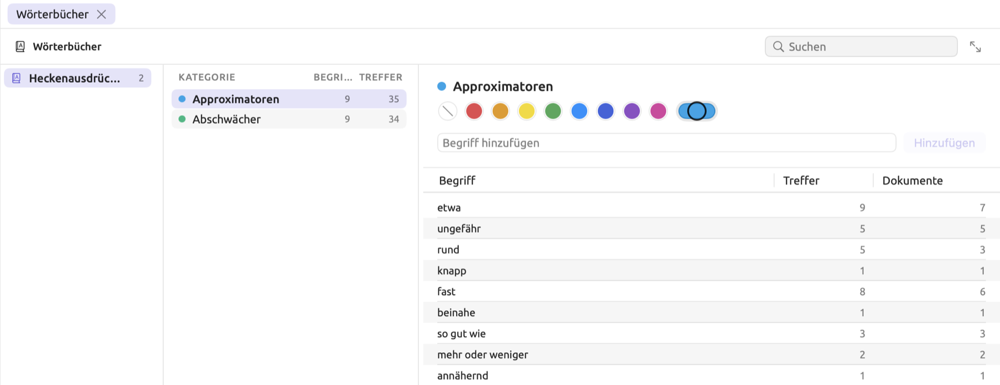
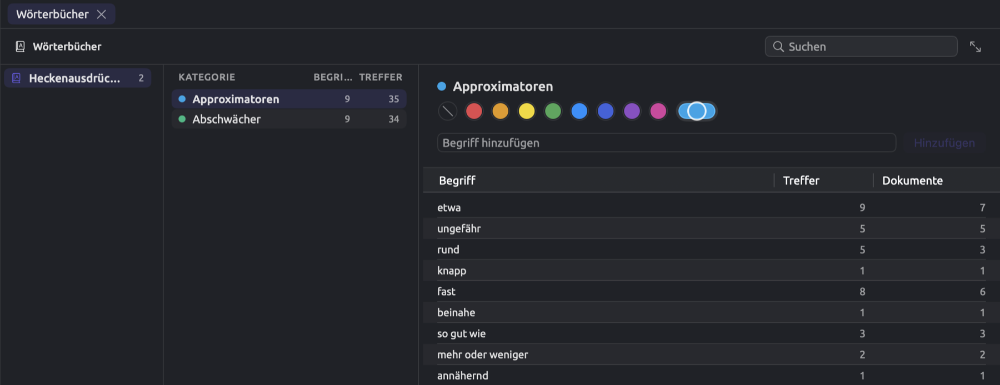
Die Ansicht hat drei Bereiche. Links stehen die Wörterbücher Ihres Projekts in alphabetischer Reihenfolge, jeweils mit der Zahl ihrer Kategorien. In der Mitte erscheinen die Kategorien des ausgewählten Wörterbuchs mit Farbe und Namen, der Zahl ihrer Begriffe unter Begriffe und der Zahl ihrer Treffer unter Treffer. Rechts schließlich steht die ausgewählte Kategorie, oben mit Namen und Farbe, darunter das Feld Begriff hinzufügen und die Liste ihrer Begriffe. Ziehen Sie die Trennlinien zwischen den Bereichen, um einem Bereich mehr Platz zu geben; in Projekten ohne Wörterbücher steht hier Keine Wörterbücher.
In der Ansicht des Projekts enthält die Kopfzeile den Titel, das Feld Suchen und die Schaltfläche In einem Fenster öffnen mit einem Symbol aus zwei diagonalen Pfeilen. Sie öffnet die Ansicht im Codebuch-Fenster, das Sie neben die Leseansicht stellen können. Die Kopfzeile in der Ansicht eines Sets enthält nur das Feld Suchen. Während LemmaLoom rechnet, erscheint in der Kopfzeile eine Fortschrittsanzeige.
Mit dem Feld Suchen oben filtern Sie die Begriffe aller Wörterbücher Ihres Projekts. Wörterbücher und Kategorien ohne passenden Begriff werden ausgeblendet. Solange die Suche aktiv ist, zeigt eine Zahl neben jedem Wörterbuch, wie viele seiner Begriffe passen. Die Zahlen unter Begriffe zeigen dasselbe für jede Kategorie. Enthält das ausgewählte Wörterbuch keinen passenden Begriff, wechselt LemmaLoom automatisch zum ersten Wörterbuch, dessen Begriffe zur Suche passen.
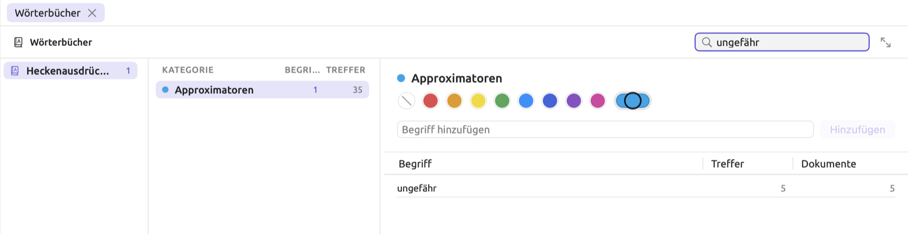
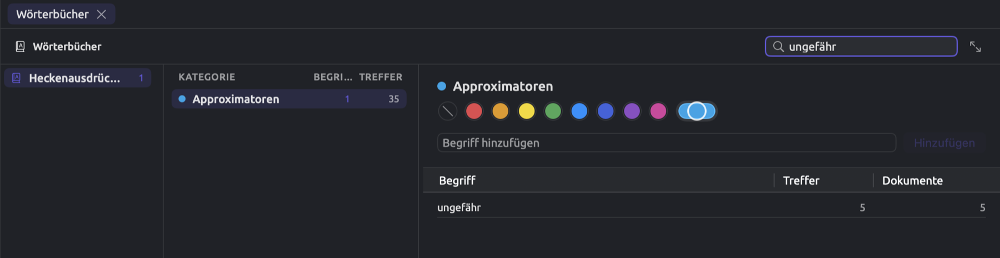
Änderungen an Wörterbüchern, Kategorien und Begriffen lassen sich immer mit Bearbeiten ▸ Widerrufen (⌘Z) zurücknehmen. Der Menübefehl nennt die vorgenommene Änderung, zum Beispiel Wörterbuch löschen widerrufen (siehe Kapitel 23, Widerrufen und Wiederholen).
Ein Wörterbuch anlegen
In der Regel steht ein Wörterbuch für ein einzelnes Konzept (etwa Heckenausdrücke), und seine Kategorien enthalten die Arten dieses Konzepts, die Sie unterscheiden möchten (etwa Approximatoren und Abschwächer). Die Lens zeigt dann eine Legende für das Konzept, und die Zählungen vergleichen seine Kategorien.
- Öffnen Sie die Ansicht Wörterbücher des Projekts oder eines Sets.
- Klicken Sie unter der Liste der Wörterbücher auf Neues Wörterbuch. Ein Wörterbuch namens „Neues Wörterbuch“ wird hinzugefügt und ausgewählt, und sein Name lässt sich sofort bearbeiten.
- Geben Sie einen Namen ein und drücken Sie den Zeilenschalter.
Ein Wörterbuch umbenennen und löschen
Um ein Wörterbuch umzubenennen, klicken Sie in der Liste mit der rechten Maustaste darauf, wählen Umbenennen, geben den neuen Namen ein und drücken den Zeilenschalter. Um das Umbenennen abzubrechen und den Namen unverändert zu lassen, drücken Sie die Esc-Taste.
Um ein Wörterbuch zu löschen, klicken Sie mit der rechten Maustaste darauf und wählen Wörterbuch löschen. Das Wörterbuch wird sofort gelöscht.
Ein gelöschtes Wörterbuch verschwindet aus dem Lens-Menü aller Dokumente. Seine Lens wird außerdem überall deaktiviert, wo sie zuvor aktiviert war. Alle Abfragen, die das Wörterbuch verwenden, zeigen im Ergebnisbereich Fehlt und laufen wieder, sobald darin ein anderes Wörterbuch ausgewählt ist.
Kategorien und Begriffe
Begriffe können aus Ihrer eigenen Lektüre stammen, aus Abfrageergebnissen oder aus veröffentlichten Wortlisten, die Sie in einem Schritt in eine Kategorie einfügen können.
Eine Kategorie hinzufügen
Klicken Sie unter der Liste der Kategorien auf Kategorie hinzufügen. LemmaLoom fügt eine neue Kategorie namens „Neue Kategorie“ in der ersten noch freien benannten Farbe hinzu, und ihr Name lässt sich sofort bearbeiten. Geben Sie der Kategorie einen Namen und drücken Sie den Zeilenschalter.
Mit Farben können Sie die Kategorien in der Leseansicht voneinander unterscheiden. Wählen Sie im mittleren Bereich eine Kategorie aus, zeigt der rechte Bereich ihre Farbfelder. Um die Farbe zu ändern, klicken Sie auf ein anderes Farbfeld unter ihrem Namen, oder Sie klicken mit der rechten Maustaste auf die Kategorie und wählen eine Farbe unter Farbe. Die Farbfelder reichen von Keine Farbe über acht benannte Farben bis zu Beliebige Farbe wählen, das die Farbauswahl des Systems öffnet.
Geben Sie möglichst jeder Kategorie eine eigene Farbe. Kategorien, die auf Keine Farbe stehen, erscheinen in der Lens in der Standardfarbe, dem Blau des Farbfelds Blau.
Begriffe hinzufügen und entfernen
In „Klimadebatte“ enthält „Abschwächer“ neun Begriffe. Sie stehen im rechten Bereich, jeweils mit der Zahl ihrer Vorkommen im gesamten Projekt.
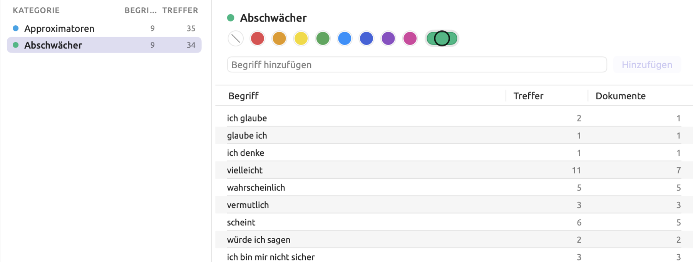
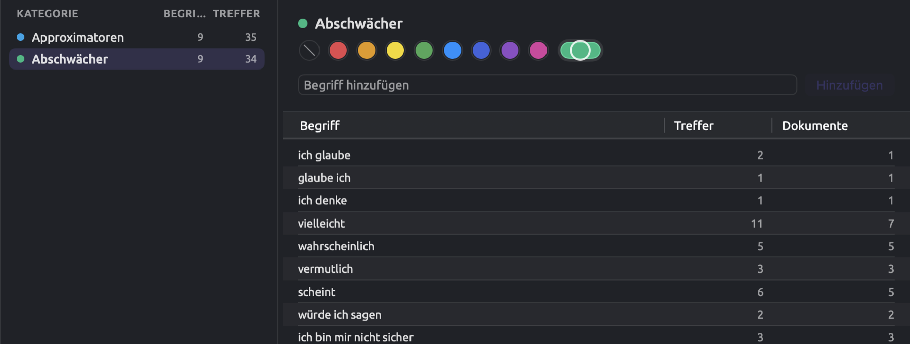
So fügen Sie einer Kategorie Begriffe hinzu:
- Wählen Sie die Kategorie aus.
- Geben Sie unter Begriff hinzufügen einen Begriff ein, oder fügen Sie eine Liste von Begriffen ein, einen pro Zeile.
- Drücken Sie den Zeilenschalter oder klicken Sie auf Hinzufügen.
Beim Hinzufügen wendet LemmaLoom diese Regeln an:
- Leerzeichen vor und nach einem Begriff werden entfernt.
- Ein Begriff, den die Kategorie schon enthält (ohne Rücksicht auf Groß- und Kleinschreibung), wird ebenso übergangen wie die Wiederholung eines Begriffs in der Liste.
- Beim Hinzufügen wird die gesamte Liste alphabetisch sortiert.
In diesem Feld trennt nur ein Zeilenumbruch einen Begriff vom nächsten. Ein Komma wird Teil des Begriffs; setzen Sie die Begriffe einer durch Kommas getrennten Liste deshalb vor dem Einfügen in eigene Zeilen.
Neben jedem Begriff der Begriffsliste stehen die Spalten Treffer und Dokumente. Sie zeigen, wie oft (Treffer) und in wie vielen Dokumenten (Dokumente) der Begriff in Ihrem Projekt oder Set vorkommt. Null Treffer bedeuten entweder, dass etwas falsch geschrieben ist oder dass der Begriff in Ihren Dokumenten nicht vorkommt. Auffallend viele Treffer im Vergleich zu allen anderen Begriffen sollten Sie genauer untersuchen (siehe Prüfen, worauf ein Begriff passt weiter unten in diesem Kapitel).
Um Begriffe zu entfernen, wählen Sie sie aus und drücken die Rückschritttaste (⌫), oder Sie klicken mit der rechten Maustaste darauf und wählen im Kontextmenü Entfernen.
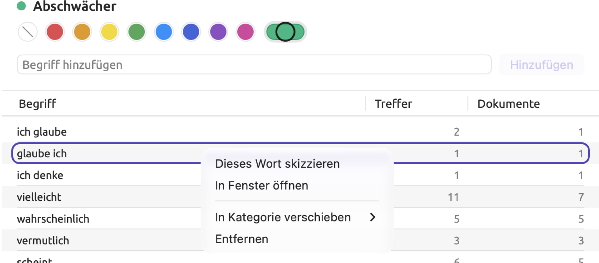
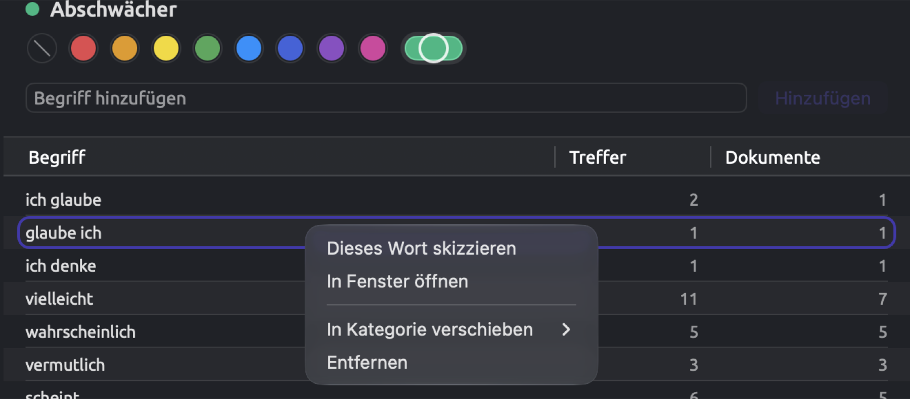
Um Begriffe in eine andere Kategorie desselben Wörterbuchs zu verschieben, ziehen Sie sie im mittleren Bereich auf diese Kategorie. Sie können dafür auch In Kategorie verschieben im Kontextmenü verwenden oder Bearbeiten ▸ In Kategorie verschieben in der Menüleiste. Enthält die andere Kategorie einen Begriff bereits, behält sie nur ein Exemplar davon.
Kategorien bearbeiten und löschen
Um eine Kategorie umzubenennen, ändern Sie den Namen oben im rechten Bereich und drücken den Zeilenschalter, oder Sie klicken mit der rechten Maustaste auf die Kategorie und wählen im Kontextmenü Umbenennen. Wortskizze im selben Menü, die die Begriffe der Kategorie nacheinander skizziert, beschreibt der Abschnitt Wortskizzen aus einer Kategorie weiter unten.
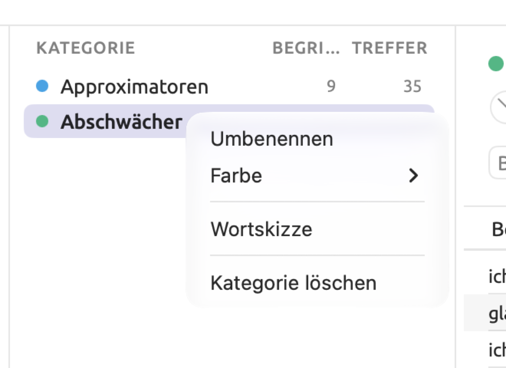
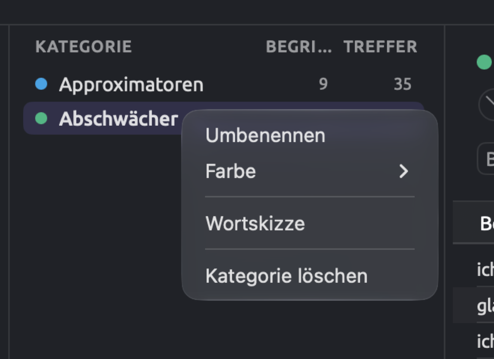
Mit Kategorie löschen löschen Sie die ganze Kategorie mit allen ihren Begriffen.
Begriffe aus einem Dokument übernehmen
Sie können Wörter und Wendungen beim Lesen in LemmaLoom direkt aus Ihren Texten hinzufügen.
- Wählen Sie das Wort oder die Wendung in der Leseansicht aus.
- Klicken Sie in der Auswahlleiste unten in der Leseansicht auf Zum Wörterbuch hinzufügen.
- Wählen Sie das Wörterbuch und dann die Kategorie.
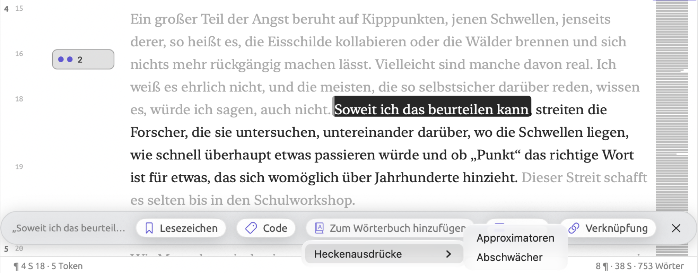
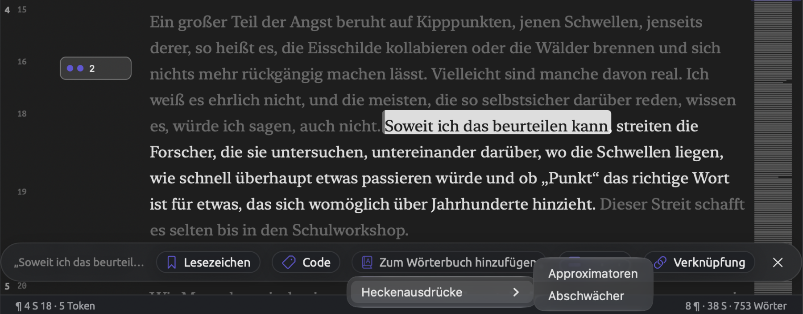
Der neue Begriff ist der ausgewählte Text ohne Leerzeichen am Anfang und am Ende.
Wählen Sie nur Wörter aus. Beginnt oder endet die Auswahl mit einem Komma oder Punkt, wird das Satzzeichen Teil des Begriffs, und ein Treffer setzt dann dasselbe Satzzeichen an derselben Stelle im Text voraus.
Zum Wörterbuch hinzufügen erscheint in der Auswahlleiste nur, wenn das aktuelle Projekt Wörterbücher enthält. Hat das gewählte Wörterbuch keine Kategorien, erscheint ein leeres Untermenü.
Begriffe aus einer Abfrage übernehmen
Wortlisten, Listen von Kollokaten und Schlüsselwortlisten können eine Kategorie in einem Schritt füllen. Kollokate sind die Wörter, die häufig im Umfeld eines bestimmten Wortes stehen, Schlüsselwörter die Wörter, die eine Gruppe von Dokumenten häufiger verwendet als eine andere (siehe Kollokationen und Schlüsselwörter in Kapitel 16, Abfrageergebnisse und Statistik). Ihre Abfrage muss Wörter oder Texttreffer liefern, und unter Anzeigen muss Kollokationen oder Schlüsselwörter stehen, oder aber Anzahl oder Vergleichen mit einem einzigen Schlüssel unter Gruppieren nach. Außerdem muss die Abfrage ein einzelnes Projekt umfassen, weil ein Wörterbuch zu einem Projekt gehört.
Im Projekt „Klimadebatte“ gibt es zum Beispiel für das Set „Aktivisten“ eine gesicherte Schlüsselwortabfrage namens „Schlüsselwörter: Aktivisten“. Ihre Schlüsselwörter, darunter wir und Hoffnung, sind keine Heckenausdrücke und gehören deshalb in ein eigenes Wörterbuch außerhalb von „Heckenausdrücke“.
So fügen Sie Ergebniszeilen einer Kategorie hinzu:
- Führen Sie die Abfrage aus.
- Öffnen Sie das Menü Aktionen (das ⋯ im Kreis) und wählen Sie Zum Wörterbuch hinzufügen.
- Wählen Sie das Wörterbuch und dann die Kategorie.
LemmaLoom übernimmt die Beschriftungen der Zeilen, höchstens die der ersten 200, in der Reihenfolge, in der das Ergebnis sie zeigt. In nach Dokument gruppierten Listen ist die Beschriftung der Titel des Dokuments, in einer Wortliste das Wort. Aus Schlüsselwortlisten werden nur die Einträge unter Positive Schlüsselwörter übernommen, also die Schlüsselwörter, die im Set häufiger vorkommen. Ist die Liste nach Lemma gezählt, werden Grundformen wie scheinen hinzugefügt, die die Lens dann nur in genau dieser Form findet; eine Zählung nach Wort fügt die Wortformen so hinzu, wie sie im Text stehen.
Zeilen, die einem vorhandenen Begriff der Kategorie entsprechen, werden ohne Rücksicht auf Groß- und Kleinschreibung übersprungen. Alle neuen Begriffe bilden einen einzigen Eintrag im Widerrufverlauf, sodass ein einziges Widerrufen sie alle entfernt. Listen enthalten meist auch unerwünschte Einträge, etwa Eigennamen; prüfen Sie die Kategorie deshalb danach.
Wie Begriffe gefunden werden
Die Wörterbuch-Lens, die Zahlen in der Ansicht Wörterbücher, die Treffer von Wörterbuchbegriffen in Abfragen und das automatische Kodieren mit einer Wörterbuch-Lens suchen Wörterbuchbegriffe alle auf dieselbe Weise. Eine Abfrage, deren Textzeile im ersten Menü auf Text steht, sucht Wörterbuchbegriffe genauso. Zwei der Regeln lassen sich dort ändern, wie Wörterbuchtreffer finden weiter unten in diesem Kapitel erklärt.
Begriffe werden unabhängig von Groß- und Kleinschreibung, Akzenten und Unterschieden in der Zeichenbreite gefunden. Der Begriff vielleicht findet Vielleicht und VIELLEICHT. Ebenso findet Expose das Wort Exposé. Im Deutschen findet schon auch schön, weil der Umlaut als Akzent gilt. Wenn Sie solche Wörter unterscheiden möchten, verwenden Sie Abfragen, deren erstes Menü auf Wortform steht; diese Einstellung berücksichtigt Akzente. Die Buchstaben in voller Breite, die manche Eingabemethoden erzeugen (häufig chinesische), und die entsprechenden Ziffern werden wie gewöhnliche Zeichen behandelt; CO2 findet also ＣＯ２.
Begriffe finden ausschließlich ganze Wörter. Leerzeichen und Satzzeichen, darunter Apostrophe, Bindestriche, Anführungszeichen, Punkte, Kommas, Semikolons, Doppelpunkte, Ausrufezeichen und Fragezeichen, begrenzen dabei die Wörter. CO2 findet deshalb das CO2 in CO2-Steuer, und ungefähr findet das ungefähr in so ungefähr.
Alle Wörter einer Wendung müssen in genau dieser Reihenfolge und mit dem richtigen Abstand zwischen aufeinanderfolgenden Wörtern stehen. mehr oder weniger braucht also genau drei Wörter mit je einem Leerzeichen dazwischen.
Gefunden wird nur die Form, die Sie eingegeben haben. Geben Sie deshalb jede Form als eigenen Begriff in die Kategorie ein, zum Beispiel scheinen, scheint und schien einzeln. Steht dagegen das erste Menü einer Abfrage auf Lemma, genügt das Lemma allein (etwa scheinen), um alle seine Flexionsformen zu finden (scheint, scheinen, schien).
Da Chinesisch Wörter nicht durch Leerzeichen trennt, findet ein Begriff mit chinesischen Schriftzeichen jedes Vorkommen dieser Zeichen. Begriffe in japanischen Kana oder in thailändischer, laotischer, Khmer-, birmanischer oder tibetischer Schrift werden ebenso gefunden. 可能 (vielleicht) wird deshalb auch in 可能性 (Möglichkeit) und 不可能 (unmöglich) gefunden. Prüfen Sie mögliche Treffer kurzer chinesischer Begriffe in der Lens, und verwenden Sie längere Begriffe, wo ein kurzer zu viel findet.
In allen anderen Fällen gilt die Regel für ganze Wörter auch in chinesischem Text, und chinesische Schriftzeichen zählen dabei als Buchstaben. Um einen Begriff wie CO2 oder 2050 zu finden, an den auf beiden Seiten chinesische Zeichen grenzen, wie in 到2050年 (bis 2050), nehmen Sie diese Nachbarzeichen in den Begriff selbst auf, oder Sie entfernen in Abfragen das Häkchen bei Ganze Wörter.
Jeder Begriff wird für sich behandelt. Stünden in „Approximatoren“ die Begriffe ungefähr und so ungefähr, würde jedes so ungefähr in einem Dokument die Zahl beider Begriffe erhöhen. Ein Begriff, der in zwei Kategorien steht, zählt in beiden. Begriffe, die sich nur in Akzenten unterscheiden, etwa Cafe und Café, ergeben doppelte Treffer. Behalten Sie einen davon und entfernen Sie den anderen.
Prüfen, worauf ein Begriff passt
In „Heckenausdrücke“ ist wahrscheinlich in „Wer keine Angst hat, hat wahrscheinlich nicht aufgepasst“ („Hoffnung braucht Arbeit“) ein Abschwächer. In „für wie wahrscheinlich er es hält“ („Wissenschaft ist nie abgeschlossen“) hat es diese Rolle dagegen nicht, denn dort geht es um die Einschätzung einer Wahrscheinlichkeit. Die Zahlen für „Abschwächer“ enthalten trotzdem beide.
Wenn Sie etwas mit Ihrem Wörterbuch zählen möchten, aktivieren Sie zuerst seine Lens in einigen Ihrer Dokumente und lesen die Treffer durch (siehe Die Wörterbuch-Lens weiter unten). Welche Begriffe den größten Teil der Zahl einer Kategorie ausmachen, sehen Sie in der Spalte Treffer der Begriffsliste; prüfen Sie diese Begriffe zuerst. Stellen Sie fest, dass ein Begriff überwiegend in einem anderen Sinn gebraucht wird, löschen Sie ihn oder verwenden Sie längere Wendungen, die nur im gewünschten Zusammenhang vorkommen. Eine Abfrage kann noch genauer sein, etwa indem sie rund nur vor Zahlen sucht (siehe Kapitel 17, Abfragemuster und Erkundung).
Die Wörterbuch-Lens
Jedes Wörterbuch des Projekts ist zugleich eine Lens, mit der sich der Text eines Dokuments annotieren lässt (siehe Kapitel 6, Lenses). Die Lens hebt jeden Treffer in dem Satz hervor, in dem er steht.
Die Abbildung unten zeigt „Keine Panik“, das Dokument des Sets „Skeptiker“ mit den meisten Treffern für „Heckenausdrücke“, mit aktivierter Lens.
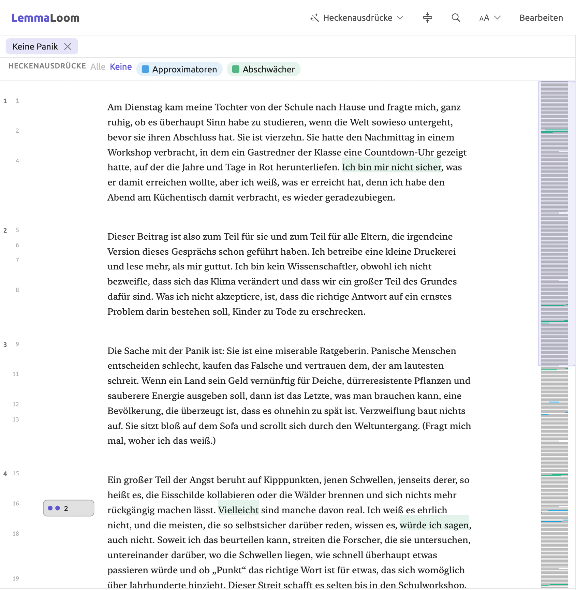
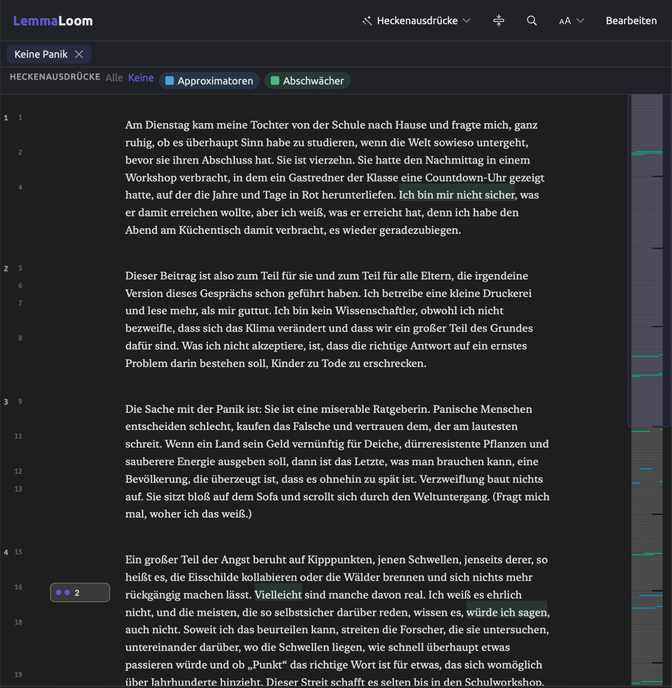
So aktivieren Sie die Wörterbuch-Lens:
- Öffnen Sie ein Dokument.
- Klicken Sie in der Titelleiste der Leseansicht auf das Lens-Menü.
- Wählen Sie das Wörterbuch. Die Wörterbücher stehen in alphabetischer Reihenfolge nach Lesezeichen und Codes.
Sobald LemmaLoom Ihr Dokument nach den Begriffen des Wörterbuchs durchsucht hat, wird jeder Treffer in der Farbe seiner Kategorie hervorgehoben. Die Legende über dem Text zeigt den Namen des Wörterbuchs und für jede Kategorie ein Aspekt-Lenslet:
- Ein Klick auf ein Lenslet deaktiviert oder aktiviert die Annotationen dieser Kategorie.
- Ein Klick auf Keine deaktiviert die Annotationen aller Kategorien, Alle aktiviert sie wieder.
- Ein Rechtsklick auf ein Lenslet bietet Nur dies aktivieren, Deaktivieren (oder Aktivieren) und Alle aktivieren.
Um nur die Sätze mit Treffern anzuzeigen, klicken Sie auf die Schaltfläche neben dem Lens-Menü mit dem Tooltip Nur die Sätze anzeigen, die eine Lens annotiert; ein weiterer Klick zeigt wieder das ganze Dokument.
Um die Lens zu deaktivieren, wählen Sie das Wörterbuch noch einmal im Lens-Menü. Annotationen deaktivieren deaktiviert die Lens zusammen mit Lesezeichen, Codes und den Abfrage-Lenses, Alle deaktivieren deaktiviert alle Lenses. Die Leseansicht im Vollbildmodus bietet dieselben Optionen in ihrem Lens-Menü.
Bis die Indizierung eines Dokuments abgeschlossen ist, sind die Lens-Menüs deaktiviert und zeigen den Tooltip Lenses stehen zur Verfügung, sobald die Indizierung abgeschlossen ist. LemmaLoom indiziert Dokumente auf Englisch, Deutsch und Chinesisch; in Dokumenten in anderen Sprachen, etwa Französisch, bleiben die Lens-Menüs deshalb deaktiviert. Die Zahlen der Begriffe in der Ansicht Wörterbücher, Zum Wörterbuch hinzufügen und Abfragen, deren erstes Menü auf Text steht, funktionieren weiterhin, weil sie den Text direkt verarbeiten (mehr dazu unter Andere Sprachen in Kapitel 21, Analyse und Indizierung).
Die Lens sucht Treffer im sichtbaren Text. Übersetzungen wie „Uns läuft die Zeit davon (Englisch)“ brauchen deshalb Begriffe in ihrer eigenen Sprache. Um in dieser Übersetzung Heckenausdrücke zu finden, fügen Sie den passenden Kategorien englische Begriffe wie about, roughly und perhaps hinzu, oder legen Sie in Ihrem mehrsprachigen Projekt für jede Sprache ein eigenes Wörterbuch an; so bleiben die Zahlen der Sprachen getrennt.
Die Treffer kodieren
Um Wörterbuchtreffer in Kodierungen umzuwandeln, kodieren Sie sie aus der Lens heraus automatisch. Die Optionen des Dialogs beschreibt Der Dialog Automatisch kodieren in Kapitel 7, Kodieren.
- Wählen Sie bei aktivierter Lens des Wörterbuchs Dokument ▸ Automatisch kodieren… (⇧⌘A) oder Automatisch kodieren… im Lens-Menü. Sind mehrere Lenses aktiviert, die automatisch kodieren können, enthalten beide Menüs für jede einen eigenen Befehl, etwa Mit Heckenausdrücke automatisch kodieren….
- Im Dialog Automatisch kodieren hat jede Kategorie unter Codes eine Zeile mit gesetztem Häkchen. Entfernen Sie das Häkchen bei jeder Kategorie, die nicht kodiert werden soll.
- Wählen Sie für jede Zeile den Code. Ein Code mit demselben Namen wie die Kategorie ist bereits gewählt, wobei Groß- und Kleinschreibung und Akzente keine Rolle spielen. Andernfalls bietet die Zeile Neuer Code: … an; damit entsteht ein Code mit Namen und Farbe der Kategorie, sobald die Kategorie eine Textstelle findet.
- Wählen Sie unter Dokumente den Eintrag Dieses Dokument, ein Set oder Gesamtes Projekt, und klicken Sie auf Automatisch kodieren.
- Sobald der Dialog Hinzugefügte Kodierungen: mit der Anzahl zeigt, klicken Sie auf Fertig.
Jeder Treffer wird als neue Kodierung angelegt, es sei denn, genau dieser Textabschnitt trägt den Code bereits. Nur die in der Legende aktivierten Kategorien erhalten eine eigene Zeile. Eine Kategorie, die auf Keine Farbe steht, ergibt einen blauen Code. Kodieren Sie ein Set oder ein ganzes Projekt, sucht LemmaLoom die Treffer im Text aller Dokumente dieses Sets oder Projekts; deshalb werden auch Dokumente kodiert, die noch indiziert werden, und Dokumente in anderen Sprachen.
Lesen Sie die neuen Kodierungen danach genau, zum Beispiel in der Ansicht Kodierungen, und entfernen Sie die Kodierungen, bei denen ein Begriff etwas anderes bedeutet als beabsichtigt.
Kategorie-Häufigkeiten
Die Ansicht Wörterbücher zählt, wie oft die Begriffe jeder Kategorie in den Dokumenten des Projekts oder Sets vorkommen. An den Zahlen sehen Sie, welchen Anteil jede Kategorie hat, welche Begriffe zu ihr beitragen und ob sich ihre Treffer über die Dokumente verteilen oder sich in einigen wenigen ballen. Wenn Sie ein Wörterbuch auswählen oder das Wörterbuch oder die gezählten Dokumente ändern, aktualisiert LemmaLoom die Zahlen automatisch.
Zusätzlich zu den Spalten Treffer und Dokumente der beiden Bereiche zeigt Kategorie-Häufigkeiten unten im rechten Bereich Diagramme der Vorkommen jeder Kategorie.
Klicken Sie auf Kategorie-Häufigkeiten, um den Abschnitt auf- oder zuzuklappen, und ziehen Sie die Trennlinie darüber, um die Größe des Diagrammbereichs zu ändern. Hier gibt es zwei Diagramme:
- Das erste zeigt für jede Kategorie einen Balken in ihrer Farbe, mit der Zahl der Treffer am Ende des Balkens. Die Kategorie mit den meisten Treffern steht oben.
- Nach Dokument zeigt für jedes Dokument mit Treffern einen Balken, unterteilt in Abschnitte in den Farben der Kategorien.
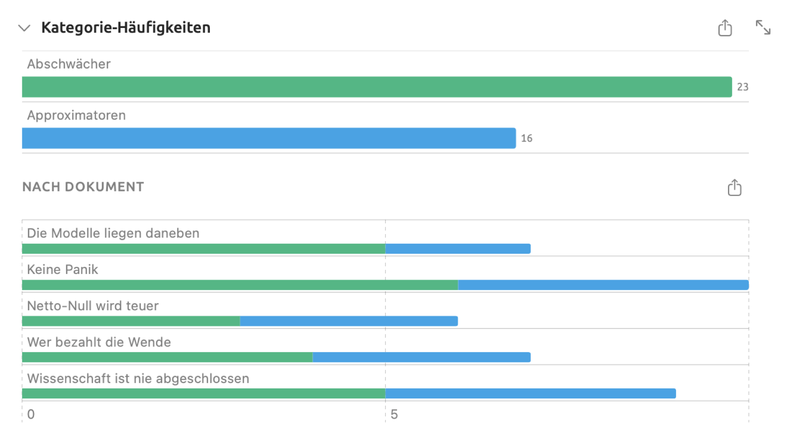
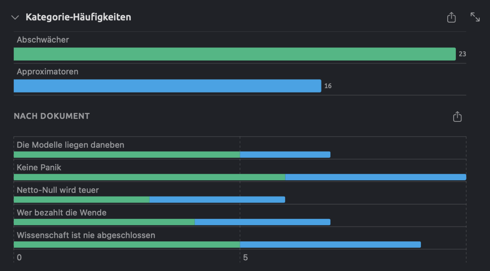
Mit In einem Fenster öffnen am rechten Ende der Zeile Kategorie-Häufigkeiten sehen Sie die Diagramme größer und können sie neben das Dokument stellen, das Sie gerade lesen. Das Fenster Kategorie-Häufigkeiten zeigt beide Diagramme für genau das Wörterbuch und das Projekt oder Set, aus dem sie stammen, und wird mit den Zahlen aktualisiert. Es zeigt jeweils nur ein Wörterbuch; ein Klick auf In einem Fenster öffnen bei einem anderen Wörterbuch ersetzt deshalb den bisherigen Inhalt.
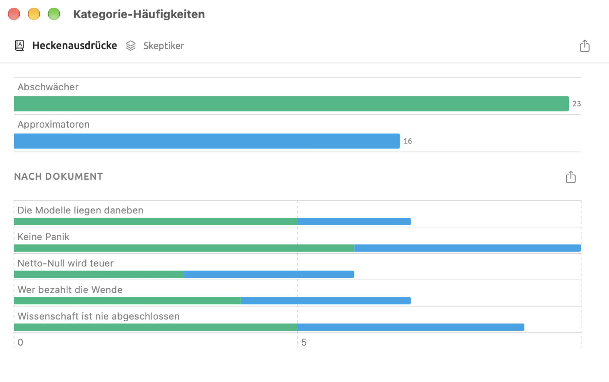
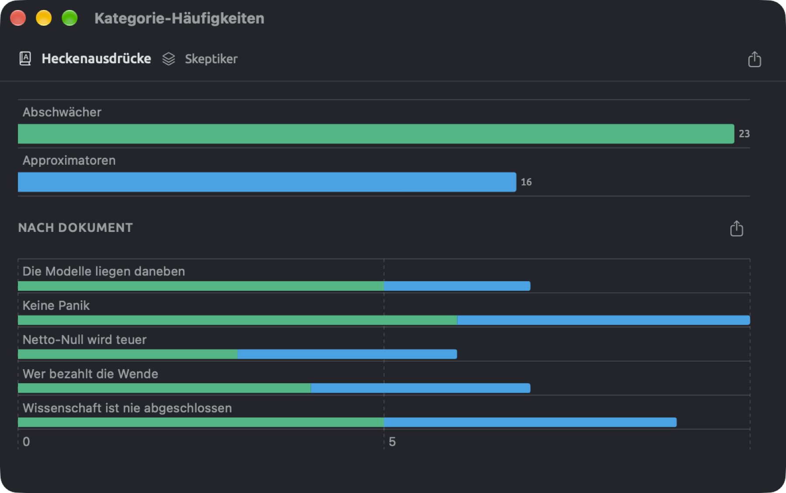
Die Zahl einer Kategorie ist die Summe der Vorkommen aller ihrer Begriffe nach den Regeln in Wie Begriffe gefunden werden weiter oben in diesem Kapitel. Welche Dokumente gezählt werden, hängt vom Kontext ab:
- In der Ansicht des Projekts alle Dokumente des Projekts.
- In der Ansicht eines Sets die Dokumente dieses Sets. Bei einem intelligenten Set (wie „Große Reichweite“) sind das alle Dokumente, die seine Bedingungen gerade erfüllen. Bei einem Tag sind es die Dokumente, die es tragen.
Gezählt wird anhand des Textes der Dokumente. Deshalb gehen auch Dokumente, die gerade indiziert werden, und Dokumente in anderen Sprachen, etwa Französisch, in die Zahlen ein.
Die Zahlen exportieren
Jedes Diagramm hat eine Schaltfläche Exportieren in Form eines Quadrats mit einem Pfeil. Beim ersten Diagramm finden Sie sie in der Zeile Kategorie-Häufigkeiten oder oben im Fenster Kategorie-Häufigkeiten, bei Nach Dokument direkt neben dem Titel des Diagramms. Sie können die Formate PNG und PDF exportieren, die beide ein Bild Ihres Diagramms enthalten, oder CSV, eine Datei mit den zugrunde liegenden Zahlen.
Für jedes Diagramm wird eine eigene CSV-Datei gesichert; für „Heckenausdrücke“ lauten die vorgeschlagenen Dateinamen Heckenausdrücke-categories.csv und Heckenausdrücke-documents.csv. In der Tabelle des ersten Diagramms ist jede Zeile eine Kategorie, in der Tabelle zu Nach Dokument jede Zeile ein Dokument mit mindestens einem Treffer. Die erste Tabelle hat eine Spalte Kategorie und eine Spalte Anzahl. Die zweite Tabelle hat eine Spalte Dokument, gefolgt von einer Spalte für jede Kategorie.
Für „Skeptiker“ enthält die Tabelle zu Nach Dokument diese Zahlen:
| Dokument | Abschwächer | Approximatoren |
|---|---|---|
| Die Modelle liegen daneben | 5 | 2 |
| Keine Panik | 6 | 4 |
| Netto-Null wird teuer | 3 | 3 |
| Wer bezahlt die Wende | 4 | 3 |
| Wissenschaft ist nie abgeschlossen | 5 | 4 |
Zusammengezählt ergeben diese Spalten die Zahlen im ersten Diagramm, 16 für „Approximatoren“ und 23 für „Abschwächer“.
Beispiel
Wenn Sie Sets vergleichen, sind in einem Set mit mehr Wörtern mehr Treffer zu erwarten, auch wenn die Schreibenden in diesem Set nicht mehr Heckenausdrücke verwenden als andere. Um den Größenunterschied zwischen Sets auszugleichen, rechnen Sie die Anzahl in eine Rate um.
Eine Rate gibt das Verhältnis zweier Größen an. Hier setzt sie die Zahl der Treffer ins Verhältnis zur Zahl der Wörter im Set und gibt die Treffer je 10.000 Wörter Text an. Da die Ansicht Wörterbücher nur Anzahlen zeigt, berechnen Sie die Rate selbst oder mit einer Abfrage. Die Rate ergibt sich aus dieser Formel:
ist die Rate, die Zahl der Treffer einer bestimmten Kategorie und die Gesamtzahl der Wörter in den gezählten Dokumenten. Teilen Sie durch , erhalten Sie die Treffer pro Wort, eine sehr kleine Zahl. Multipliziert mit 10.000 ergibt sie die Treffer pro 10.000 Wörter, eine Zahl, die sich leichter erfassen und vergleichen lässt.
Nehmen Sie als Beispiel an, die Ansicht Wörterbücher zeigt für die Sets „Aktivisten“ und „Skeptiker“ die folgenden Trefferzahlen. Die Wortzahlen sind die des Beispielprojekts, auf volle Tausend gerundet; die Trefferzahlen der Skeptiker sind die Summen von oben, die der Aktivisten sind erfunden. Im Beispielprojekt enthalten die sechs Texte des Sets „Aktivisten“ zusammen nur drei Treffer.
| Aktivisten | Skeptiker | |
|---|---|---|
| Wörter | 4.000 | 3.000 |
| Approximatoren | 12 | 16 |
| Abschwächer | 28 | 23 |
Insgesamt kommen die Aktivisten auf mehr „Abschwächer“, 28 gegenüber 23. Ihre Texte umfassen aber 4.000 Wörter, die der Skeptiker 3.000. Mit und für die Aktivisten ergibt sich:
Entsprechend für die Skeptiker (, ):
Auf 10.000 Wörter verwenden die Skeptiker knapp 77 Abschwächer, die Aktivisten 70. Für „Approximatoren“ betragen die Raten je 10.000 Wörter bei den Aktivisten und bei den Skeptikern; hier liegen die Skeptiker also weit vorn.
Die Gesamtzahl der Wörter eines Dokuments sehen Sie unter Wörter im Tab Text des Inspektors (siehe Wörter und verschiedene Wörter in Kapitel 10, Der Text-Inspektor). Zählen Sie diese Werte für jedes Ihrer Sets zusammen. Die Wortzahl in der Statusleiste der Leseansicht enthält auch Satzzeichen und ist deshalb höher.
Sie können die ganze Rechnung stattdessen auch einer Abfrage überlassen:
- Klicken Sie in der Seitenleiste unter Projekt auf Abfragen, damit beide Sets gezählt werden.
- Wählen Sie in der Bedingung Suchen den Eintrag Text · Texttreffer.
- Wählen Sie im zweiten Menü der Textzeile Wörterbuch. „Heckenausdrücke“, das einzige Wörterbuch des Projekts, ist dann ausgewählt.
- Klicken Sie auf das Steuerelement unter dem Wörterbuch und setzen Sie nur bei „Abschwächer“ ein Häkchen. Ohne Häkchen werden beide Kategorien zusammen gezählt.
- Wählen Sie unter Anzeigen den Eintrag Anzahl.
- Klicken Sie auf Gruppieren nach und wählen Sie im Feldmenü der neuen Zeile Set.
- Wählen Sie im Menü, das Treffer zeigt, den Eintrag Pro 10.000 Wörter.
Die Zeilen „Aktivisten“ und „Skeptiker“ zeigen die Rate der Kategorie „Abschwächer“. Im Beispielprojekt ergibt „Aktivisten“ etwa 5 und „Skeptiker“ etwa 72. Bei den Skeptikern ist das weniger als die 76,7 von oben, weil die Abfrage durch die genaue Zahl der Wörter teilt, die auch die Statistik Wörter im Inspektor zeigt.
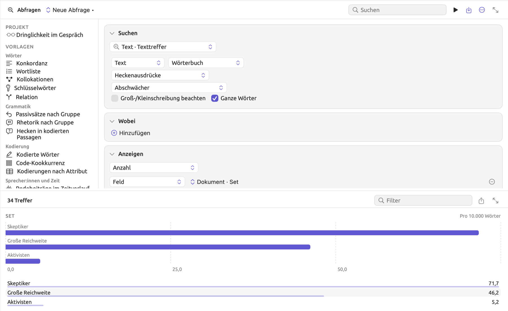
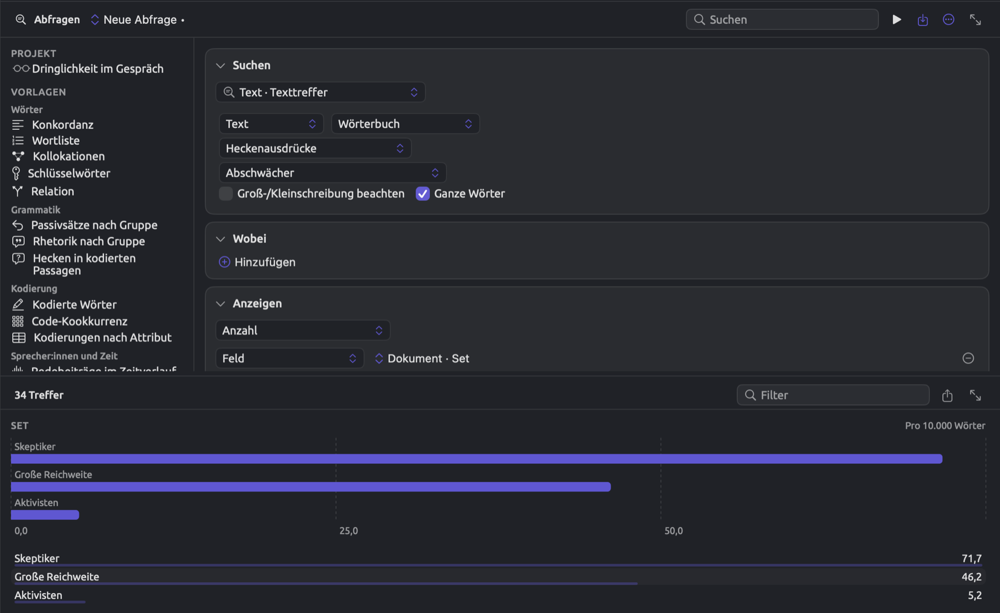
Die Zählung enthält Wörter, die die Schreibenden zitieren, statt sie selbst zu verwenden, etwa Ich bin mir nicht sicher in „Wissenschaft ist nie abgeschlossen“. Das Diagramm Nach Dokument hilft Ihnen festzustellen, ob sich Ihre Treffer über viele Dokumente verteilen oder sich in einem bestimmten Dokument ballen. Beachten Sie, dass die Balken im Diagramm Nach Dokument Anzahlen darstellen; lesen Sie sie deshalb im Verhältnis zur Länge des jeweiligen Dokuments. Um mehrere Gruppen von Dokumenten zu vergleichen, verwenden Sie Vergleichen in einer Abfrage (siehe Gruppen vergleichen in Kapitel 16, Abfrageergebnisse und Statistik).
Wortskizzen aus einer Kategorie
Eine Wortskizze fasst zusammen, mit welchen Wörtern sich ein Wort grammatisch verbindet, etwa seine häufigsten Subjekte, Objekte und Modifikatoren (siehe Kapitel 12, Wortskizze). Starten Sie eine Wortskizze von einer Kategorie aus, können Sie die einzelnen Begriffe der Kategorie erkunden. Von „Abschwächer“ aus zeigt die Wortskizze, worüber die Schreibenden vorsichtig formulieren.
Für eine Wortskizze der Begriffe einer Kategorie klicken Sie in der Ansicht Wörterbücher des Projekts oder eines Sets mit der rechten Maustaste auf die Kategorie und wählen Wortskizze. Enthält die Kategorie keine Begriffe, ist dieser Befehl deaktiviert.
Für eine Wortskizze eines bestimmten Begriffs doppelklicken Sie in der Begriffsliste auf den Begriff, oder Sie wählen ihn aus und drücken den Zeilenschalter. Dieses Wort skizzieren im Kontextmenü eines Begriffs in der Begriffsliste bewirkt dasselbe. Wählen Sie in diesem Menü stattdessen In Fenster öffnen, erscheint die Skizze im Wortskizzen-Fenster, und die Ansicht Wörterbücher bleibt auf dem Bildschirm sichtbar.
Bei Sets zeigt der Tab des Sets dessen Ansicht Wortskizze. Bei Wortskizzen, die vom Tab Wörterbücher des Projekts ausgehen, öffnet sich der Tab Wortskizze des Projekts. Unter der Leiste oben in der Ansicht steht eine Zeile mit dem Namen und der Farbe der Kategorie, gefolgt von ihren Kandidatenwörtern, den Wörtern, mit denen die Wortskizze beginnen kann. Ein Kandidatenwort ist das Lemma, das zu einem Begriff der Kategorie gehört; in „Abschwächer“ hat ich denke das Kandidatenwort denken, und würde ich sagen hat werden. Nach dem Befehl Wortskizze zeigt die Skizze das erste Kandidatenwort, also das häufigste. Klicken Sie auf ein anderes Kandidatenwort, um es zu skizzieren.
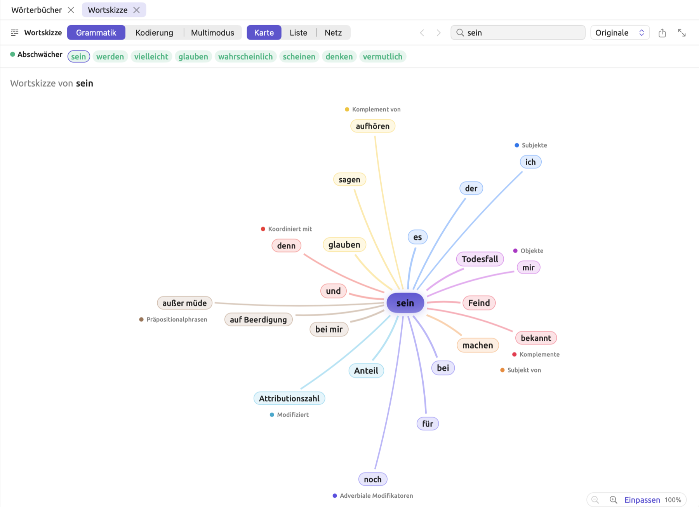
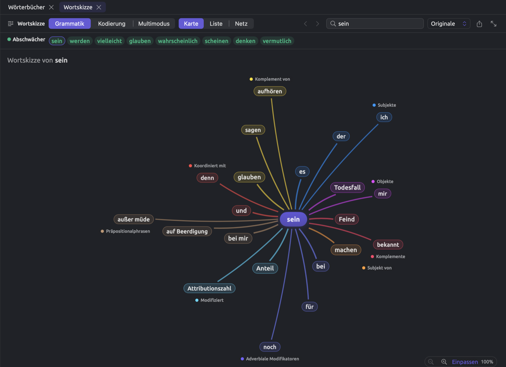
Eine Wortskizze braucht ein Lemma für den Begriff. Zuerst sucht LemmaLoom die Vorkommen Ihres Begriffs in den ausgewerteten Dokumenten und leitet daraus sein Lemma ab.
- Ein Begriff aus einem einzelnen Wort (etwa scheint) wird zu scheinen.
- Bei einem Begriff aus einer Wendung (ich denke) beruht die Skizze dagegen auf dem Lemma ihres grammatischen Kernworts (hier denken, dessen Subjekt ich ist). Aus demselben Grund wird glaube ich zu glauben. Mehr zur grammatischen Struktur von Wörtern steht unter Grundbegriffe in Kapitel 21, Analyse und Indizierung.
- Enthält Ihr Begriff Kontraktionen, teilt die Indizierung ihn in mehrere Wörter. Das englische I’d say landet deshalb unter say, I’m not sure dagegen unter be, weil die grammatische Analyse ’m als Kernwort bestimmt.
- Ein chinesischer Begriff, den die Indizierung in mehrere Wörter teilt, wird als Wendung aus diesen Wörtern behandelt.
Kommt Ihr Begriff in den Dokumenten nicht in der geschriebenen Form vor, erhält er sein Lemma aus den Lemmata seiner einzelnen Wörter. Ein Begriff in der Grundform (scheinen) findet sein Lemma also auch dann, wenn die Dokumente ihn nur als scheint enthalten.
Begriffe, die auf dasselbe Lemma zurückgehen, teilen sich ein Kandidatenwort. Wenn Sie den Mauszeiger auf ein Kandidatenwort halten, sehen Sie die Liste der zugehörigen Begriffe. Die Kandidatenwörter sind danach geordnet, wie häufig ihr Lemma in Ihrem Projekt oder Set vorkommt, vom häufigsten zum seltensten. Ein Begriff, der in Ihrem Korpus in keiner Form vorkommt, steht am Ende in seiner eigenen Schreibweise, deaktiviert und mit dem Tooltip Nicht gefunden. Wenn Sie den Inhalt des Felds Wort ändern und den Zeilenschalter drücken, wird dieses Wort skizziert und die Zeile verschwindet, es sei denn, das Wort ist selbst ein Kandidatenwort.
Wörterbücher in Abfragen
Wenn Lens und Zahlen nicht ausreichen, etwa um alle Flexionsformen eines Wortes zu finden, Raten je Set zu berechnen oder nur in kodierten Textstellen zu suchen, verwenden Sie eine Abfrage. Wie Sie eine Abfrage aufbauen, erklärt Kapitel 15, Eine Abfrage erstellen. Jede Textzeile einer Abfrage hat zwei Menüs. Das erste legt fest, womit die Begriffe verglichen werden. Das zweite steht zunächst auf Begriffe und legt fest, woher Ihre Begriffe stammen.
Wörterbuchtreffer finden
- Öffnen Sie eine Abfrage. Für ein einzelnes Dokument wählen Sie Darstellung ▸ Inspektor ▸ Multimodus und klicken auf Abfrage. Für ein Set oder das Projekt öffnen Sie dessen Ansicht Abfragen.
- Wählen Sie in der Bedingung Suchen den Eintrag Text · Texttreffer. In der Bedingung erscheint eine Textzeile.
- Öffnen Sie das zweite Menü der Zeile, das Begriffe zeigt, und wählen Sie Wörterbuch. Das alphabetisch erste Wörterbuch des Projekts ist dann ausgewählt; ein anderes wählen Sie im Menü, das darunter erscheint.
- Um nur einige der Kategorien zu verwenden, klicken Sie auf das Steuerelement Keine unter dem Wörterbuch, und setzen Sie im Bereich, der sich öffnet, bei diesen Kategorien ein Häkchen. Ohne Häkchen werden alle Kategorien verwendet.
- Lassen Sie das erste Menü auf Text, um dieselben Treffer wie mit der Lens zu erhalten.
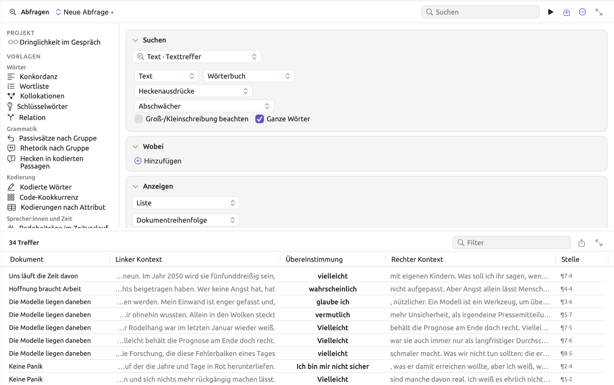
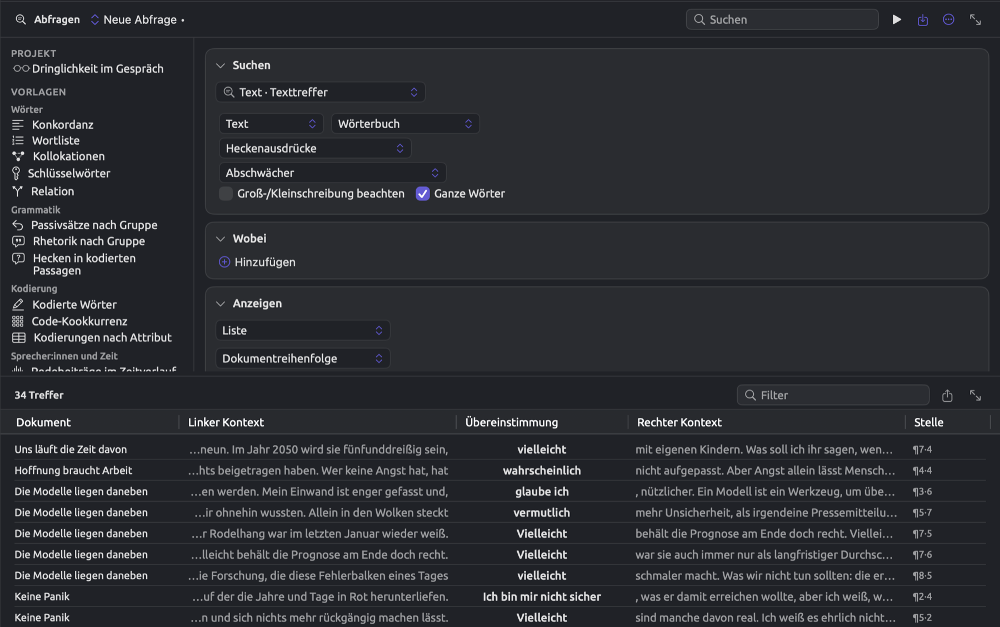
Die Ergebnisse zeigen die Treffer im Kontext, und Anzeigen bietet die üblichen Zählungen und Diagramme (siehe Kapitel 16, Abfrageergebnisse und Statistik).
Die beiden Markierungsfelder unter der Zeile, Groß-/Kleinschreibung beachten und Ganze Wörter, beeinflussen, wie die Abfrage Treffer findet. Ohne Häkchen bei Ganze Wörter werden Begriffe auch innerhalb längerer Wörter gefunden (etwa findet dann auch etwas). Ist Groß-/Kleinschreibung beachten aktiviert, spielt die Groß- und Kleinschreibung eine Rolle, sodass vielleicht nur noch vielleicht findet. Steht das erste Menü oben auf Text, bleiben Akzente und Unterschiede in der Zeichenbreite außerdem unberücksichtigt, gleich ob eines der Markierungsfelder darunter aktiviert ist.
Text, die Voreinstellung im ersten Menü, vergleicht die Begriffe der Abfrage mit dem geschriebenen Text des Dokuments nach den Regeln unter Wie Begriffe gefunden werden weiter oben in diesem Kapitel. Die drei anderen Optionen, Wort, Wortform und Lemma, vergleichen sie mit den einzelnen Wörtern des Textes, wie die Indizierung sie bestimmt hat:
- Wort vergleicht jedes Wort des Begriffs mit jedem Wort im Text des Dokuments; Groß- und Kleinschreibung und Akzente bleiben dabei unberücksichtigt, es sei denn, Groß-/Kleinschreibung beachten ist aktiviert.
- Lemma vergleicht jedes Wort eines Begriffs mit den Lemmata der Wörter im Text. Schreiben Sie die Begriffe als Lemmata. scheinen findet scheinen, scheint und schien. Um Begriffe so zu suchen, wie sie im Text stehen, etwa ich glaube in „Heckenausdrücke“, verwenden Sie Wort statt Lemma. Lemma ignoriert Groß-/Kleinschreibung beachten.
- Wortform funktioniert wie Lemma, unterscheidet aber Akzente und damit das deutsche schon von schön (siehe Womit verglichen wird in Kapitel 15, Eine Abfrage erstellen).
Bei allen drei Vergleichsarten, die auf Wörtern beruhen, passt eine Wendung dort, wo ihre Wörter in einem Satz aufeinanderfolgen, unabhängig von Zeilenumbrüchen oder Leerraum zwischen den Wörtern. Bindestriche in Begriffen gelten als Leerzeichen, ebenso jeder Bindestrich, den die Indizierung als eigenes Wort abtrennt (in englischen Dokumenten findet carbon neutral so carbon-neutral).
Für diese drei Vergleichsarten hat Ganze Wörter keinerlei Wirkung. In einem chinesischen Dokument findet der Begriff 可能 nur Stellen, an denen die Indizierung 可能 als eigenständiges Wort bestimmt hat. Ist ein Dokument nicht indiziert, arbeiten alle drei Vergleichsarten wie Text.
Wörterbuchregeln
Ein Wörterbuch kann außerdem die Ergebnisse anderer Abfragen prüfen, etwa wenn eine Abfrage Sätze mit einem Abschwächer sucht oder kodierte Textstellen mit einem Approximator.
- Wählen Sie in der Bedingung Suchen, was Sie finden möchten, zum Beispiel Text · Sätze.
- Klicken Sie in der Bedingung Wobei auf Hinzufügen und wählen Sie Text hinzufügen.
- Wählen Sie im zweiten Menü der neuen Zeile Wörterbuch und dann wie oben das Wörterbuch und die Kategorien.
Die Zeile trifft zu, sobald im Ergebnis mindestens ein Begriff passt. Bei Ergebnissen, die eine Indizierung voraussetzen (etwa Wörter und Sätze), steht das erste Menü anfangs auf Wort, bei anderen (Kodierungen, Absätze usw.) auf Text. Wenn Sie Wörter suchen, besteht jedes Ergebnis aus einem einzelnen Wort; dann können nur Begriffe aus einem Wort passen.
Um mit „Unsicherheit“ kodierte Textstellen zu finden, die Abschwächer enthalten, wählen Sie in der Bedingung Suchen den Eintrag Annotationen · Kodierungen. Legen Sie die Regel Code ist eines von „Unsicherheit“ an und danach eine Textzeile für die Kategorie „Abschwächer“ in „Heckenausdrücke“.
Begriffe und ihre Treffer auflisten
Bibliothek · Wörterbucheinträge in der Bedingung Suchen zeigt die Begriffe selbst. Jede Zeile steht für einen Begriff, mit den Spalten Name (der Begriff), Kategorie, Wörterbuch und Treffer. Die Trefferzahlen beruhen auf den Vorkommen in den Dokumenten der Abfrage, gezählt nach den Regeln in Wie Begriffe gefunden werden weiter oben. In der Abfrage eines Dokuments bildet das gerade geöffnete Dokument das Korpus der Abfrage.
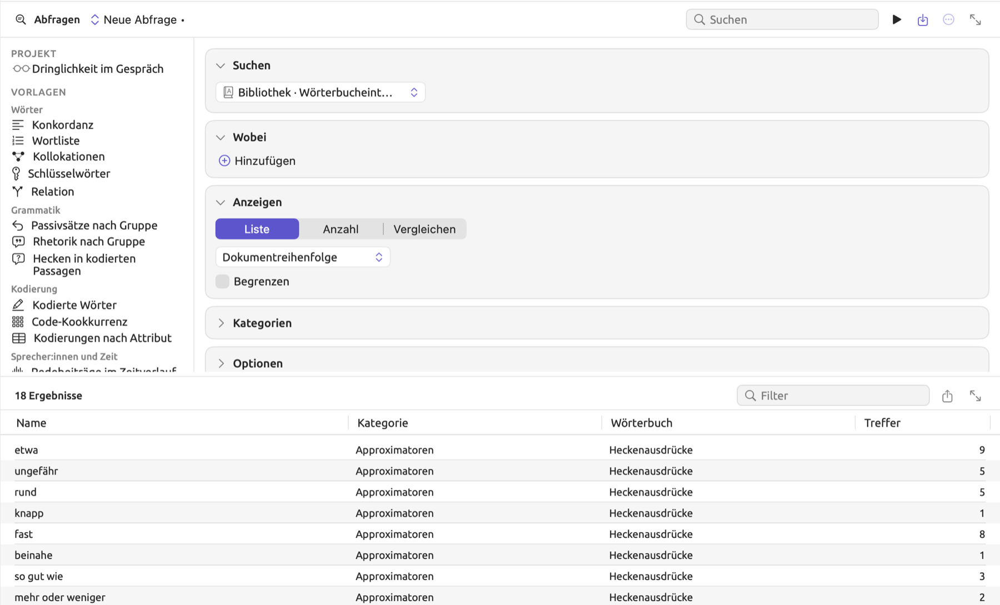
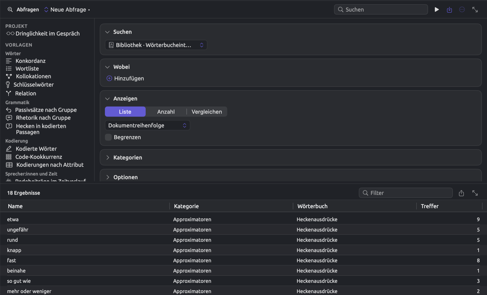
In der Begriffsliste der Ansicht Wörterbücher stehen die Treffer getrennt nach Kategorie. Die Abfrage zeigt die Begriffe aller Wörterbücher eines Projekts in einer einzigen Liste; mit Regeln in der Bedingung Wobei können Sie sie eingrenzen. Eine Regel für Wörterbuch beschränkt die Liste auf die Begriffe eines Wörterbuchs, und die Regel Treffer ist 0 liefert die Begriffe, die nicht vorkommen.
Die Vorlage Wörterbuchkategorien nach Dokument
Diese Vorlage liefert die Zahlen des Diagramms Nach Dokument als Abfrage.
- Öffnen Sie die Ansicht Abfragen eines Sets oder des Projekts.
- Klicken Sie in der linken Spalte unter Vorlagen auf Wörterbuchkategorien nach Dokument. Sie steht unter Sprecher:innen und Zeit.
Die Vorlage findet Texttreffer im alphabetisch ersten Wörterbuch des Projekts. Sie verwendet alle Kategorien, mit dem ersten Menü auf Text. Das Ergebnis zeigt Anzahl, gruppiert zuerst nach Dokument, dann nach Kategorie. In der Bedingung Suchen können Sie ein anderes Wörterbuch wählen. Die Vorlage erscheint in Abfragen über mehrere Dokumente, sofern Ihr Projekt ein Wörterbuch enthält.
Eine Wörterbuchabfrage als Lens oder Analysator sichern
Wenn eine Abfrage ein Wörterbuch verwendet und zusätzlich Regeln enthält, etwa zur sprechenden Person oder zur Verwendung bestimmter Codes, können Sie sie als Lens sichern (siehe Kapitel 18, Abfrageergebnisse nutzen).
Abfrage-Lenses markieren jeden Treffer in einer einzigen Farbe unter dem Namen der Abfrage. Um Treffer nach den Kategorien des Wörterbuchs zu unterscheiden, legen Sie in der Bedingung Kategorien für jede Wörterbuchkategorie eine Abfragekategorie an (siehe Kategorien und Färben nach in Kapitel 15, Eine Abfrage erstellen). Wählen Sie in jeder dieser Kategorien Text hinzufügen und stellen Sie das zweite Menü der neuen Zeile auf Wörterbuch. Wählen Sie dann nur die betreffende Wörterbuchkategorie aus. Beim Aktivieren einer Abfrage-Lens übernimmt LemmaLoom die Begriffe des Wörterbuchs in ihrem aktuellen Stand. Ändern Sie das Wörterbuch danach, deaktivieren Sie die Lens und aktivieren Sie sie erneut.
Analysatoren, die aus einer Abfrage erstellt wurden, laufen bei der Indizierung jedes Dokuments in allen Projekten. Der Analysator speichert seine Ergebnisse außerdem beim jeweiligen Dokument (siehe Eine Abfrage in einen Analysator umwandeln in Kapitel 18, Abfrageergebnisse nutzen). Als Analysator sichern … steht nur für Abfragen zur Verfügung, die Begriffe mit den Wörtern vergleichen, die die Indizierung bestimmt hat. Dazu muss das erste Menü der Textzeile auf Wort, Wortform oder Lemma stehen. Außerdem muss die Abfrage Wörter, Sätze oder eine ähnliche indizierte Einheit finden.
Analysatoren behalten die Begriffe, mit denen sie erstellt wurden, bis Sie sie aktualisieren. Ändert sich eine Abfrage, aus der ein Analysator entstanden ist, wird der Analysator als Veraltet gekennzeichnet. Um den Analysator einer Abfrage zu aktualisieren, wählen Sie erneut Als Analysator sichern … im Menü Sichern der Abfrage. Der Dialog trägt dann den Titel Analysator aktualisieren, und ein Klick auf Aktualisieren genügt, um die gespeicherten Begriffe im Analysator zu erneuern.
Wörterbücher in Archiven
Nur das LemmaLoom-Archiv (.llz) eines vollständigen Projekts enthält die Wörterbücher des Projekts. Beim Import einer solchen .llz-Datei werden die im Projektarchiv enthaltenen Wörterbücher wiederhergestellt. Mehr über Archive und Austauschformate erfahren Sie in Kapitel 22, Austausch und Export.